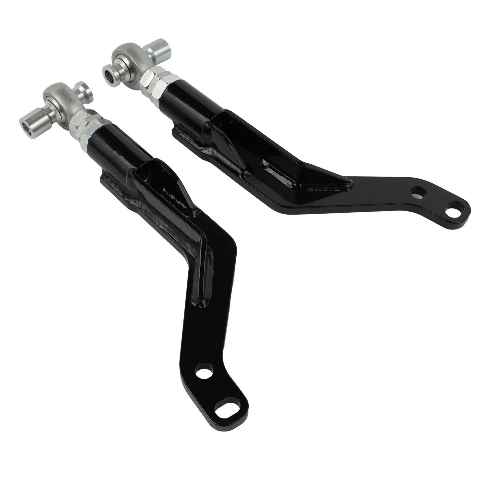

1 / 5FAPO 2 Pcs of Front Offset Tension Rod Do Nissan S13 240SX Silvia 1989-1994 PZ701310
Zastosowanie: Nissan S13 240SX / Silvia (1989–1994) Cechy produktu: Wykonane ze stopu stali o wysokiej wytrzymałości, zapewniającego trwałość i wydajność Kuty przegub kulowy z precyzyjną obróbką CNC dla lepszej dokładności i niezawodności Malowanie proszkowe zapewnia długotrwałą ochronę przed rdzą i korozją Regulowany kąt kółka dla lepszej obsługi i regulacji wyrównania Zestaw zawiera: 2 × przednie drążki napinające
Application: Nissan S13 240SX / Silvia (1989–1994) Features: Constructed from high-strength steel alloy for durability and performance Forged ball joint with CNC precision machining for improved accuracy and reliability Powder-coated finish provides long-lasting rust and corrosion protection Adjustable caster angle for enhanced handling and alignment tuning Kit Includes: 2 × Front Offset Tension Rods
1036 PLN
Opis produktu
Zastosowanie:
- Nissan S13 240SX / Silvia (1989–1994)
Cechy produktu:
- Wykonane ze stopu stali o wysokiej wytrzymałości, zapewniającego trwałość i wydajność
- Kuty przegub kulowy z precyzyjną obróbką CNC dla lepszej dokładności i niezawodności
- Malowanie proszkowe zapewnia długotrwałą ochronę przed rdzą i korozją
- Regulowany kąt kółka dla lepszej obsługi i regulacji wyrównania
Zestaw zawiera:
- 2 × przednie drążki napinające
Application:
- Nissan S13 240SX / Silvia (1989–1994)
Features:
- Constructed from high-strength steel alloy for durability and performance
- Forged ball joint with CNC precision machining for improved accuracy and reliability
- Powder-coated finish provides long-lasting rust and corrosion protection
- Adjustable caster angle for enhanced handling and alignment tuning
Kit Includes:
- 2 × Front Offset Tension Rods
FAPO Polska
Ten produkt obsługujemy lokalnie
Autoryzowana obsługa
FAPO Polska prowadzi katalog, kontakt i zamówienia bez odsyłania klienta do zewnętrznych sklepów.
Dobór po aucie
Sprawdzamy dopasowanie produktu do pojazdu, rocznika i wersji przed finalizacją zamówienia.
Wsparcie po zakupie
Masz kontakt w Polsce w sprawach zamówień, wysyłki, gwarancji i zwrotów.